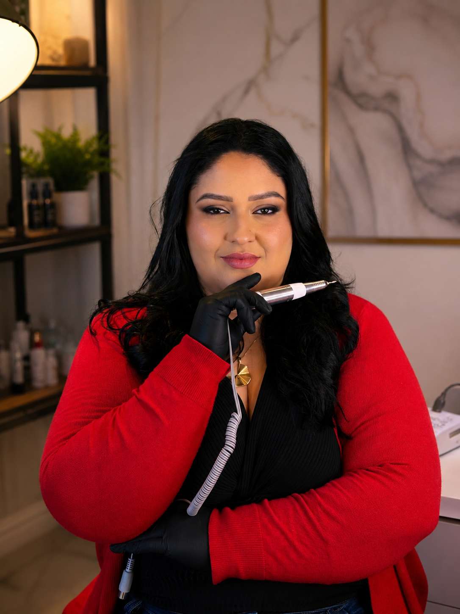
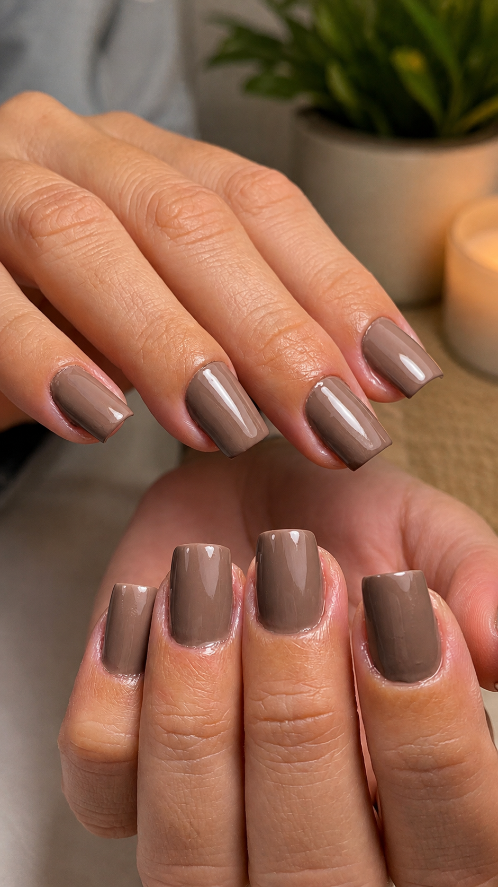
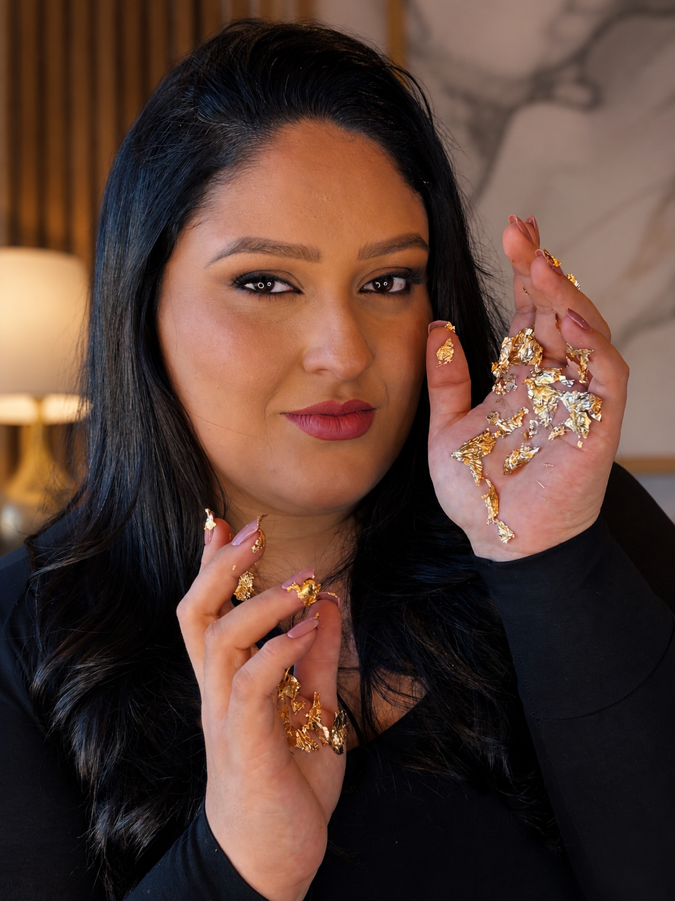

Já trabalha como manicure ou nail designer e quer aperfeiçoar sua técnica.
Curso presencial de Fibra de Vidro
Aprimore sua técnica e descubra como se destacar como nail designer.
Você já faz unhas, mas sente que ainda não entrega o resultado que gostaria? Ou acredita que poderia cobrar mais pelos seus serviços, mas ainda não sabe como chegar nesse nível?
Talvez você já tenha feito outros cursos, mas ainda se sinta insegura na hora de executar a técnica, demore nos atendimentos ou tenha dificuldade para atrair clientes e aumentar seu faturamento.
Foi pensando nessas profissionais que eu desenvolvi esse treinamento intensivo, totalmente presencial.
Durante um dia de imersão, eu vou compartilhar a técnica de Fibra de Vidro que utilizo há mais de 14 anos, além de tudo o que aprendi para construir uma carreira sólida: desde acabamento e agilidade até captação de clientes, precificação e organização financeira.
Porque dominar uma técnica é importante. Mas saber transformar esse conhecimento em crescimento profissional faz toda a diferença.

Esse curso é para você que...
Sente que pode entregar um resultado mais profissional e aumentar o valor do seu trabalho.
Quer atrair mais clientes e crescer na profissão.
Deseja aprender uma técnica que une acabamento, resistência e naturalidade.
Busca mais segurança para executar seus atendimentos.
Quer aprender diretamente com quem vive dessa profissão há mais de 10 anos.
Quem sou eu
Eu sou a
Bryza Leydiane.
Comecei com um alicate emprestado e uma caixinha de sapato.
Hoje, com mais de 14 anos de experiência e mais de 18 mil unhas feitas, eu ajudo mulheres a elevarem o nível do seu trabalho através da técnica de Fibra de Vidro.
Ao longo dessa trajetória, eu percebi que muitas profissionais enfrentam o mesmo desafio: já trabalham na área, mas sentem que podem entregar um resultado melhor, atender com mais segurança, atrair mais clientes e, principalmente, cobrar o valor que realmente merecem.
Foi pensando nisso que criei este curso.
Aqui, eu compartilho a técnica e a experiência que construí ao longo desses anos para ajudar outras profissionais a aperfeiçoarem seu trabalho, se destacarem no mercado e alcançarem resultados que, sozinhas, talvez demorassem muito mais para conquistar.
Quero garantir minha vagaComo funciona
o curso?
Esse é um intensivo presencial de um dia, pensado para quem deseja aprender de forma prática, com acompanhamento e sem sair do curso cheia de dúvidas.
Durante o treinamento você terá:
- 01
Aula teórica
- 02
Aula prática
- 03
Correção individual
- 04
Certificado profissional de nail designer

Além disso, você aprenderá uma técnica que une um design perfeito, durabilidade e acabamento profissional.
Quero garantir minha vaga no cursoO que você vai aprender
Durante o curso você aprenderá:
Técnica completa de Fibra de Vidro
Como gravar vídeos que valorizam seu trabalho
Como fotografar suas unhas na mesa para publicar nas redes sociais
Como conquistar clientes através do famoso boca a boca
Como atrair clientes pelas redes sociais
Como se tornar uma profissional reconhecida na sua região
Como definir o valor dos seus serviços
Como começar mesmo com poucos materiais
Organização financeira para quem está iniciando
Bônus
Além do treinamento presencial, você ainda terá:
Apostila impressa
Técnica do Banho de Gel
Técnica do Banho de Crystal
Brindes especiais
Coffee break com momento de networking entre as alunas
Fotos suas e do seu trabalho para as redes sociais
O curso não termina quando a aula acaba.
Depois do treinamento, você continuará tendo suporte!
Durante 30 dias, você fará parte do grupo exclusivo de alunas no WhatsApp.
Nesse período, poderá tirar dúvidas, pedir orientações e receber acompanhamento para aplicar tudo o que aprendeu com muito mais segurança.
Porque aprender é importante, mas ter alguém para te ajudar nos atendimentos faz toda a diferença.
O próximo passo não precisa ser perfeito.
Ele só precisa acontecer!
Talvez daqui a alguns meses você continue enfrentando as mesmas dificuldades nos seus atendimentos, ou talvez olhe para trás e perceba que tudo começou no dia em que decidiu investir no seu crescimento profissional.
As vagas para essa turma são limitadas e o agendamento é feito diretamente comigo.
Clique no botão abaixo e vamos conversar!
Será um prazer te ajudar a elevar o nível do seu trabalho e conquistar resultados ainda melhores na sua profissão.
Quero agendar minha vaga
O sucesso começa onde a desculpa termina!
